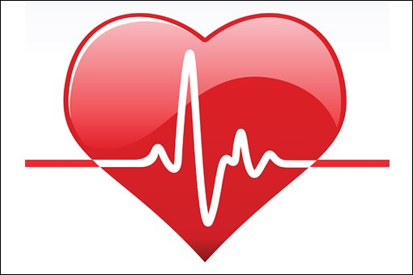

Kalp Sağlığınız için İpuçları
Kronik hastalıklar, tüm dünyada ve ülkemizde en önemli morbidite ve mortalite nedenidir.
Türkiye’ de tüm yaş grupları değerlendirildiğinde her iki ölümden biri kalp damar hastalıkları kaynaklarıdır. Kalp ve damar hastalıkları; koroner kalp hastalıkları, serebrovasküler hastalıklar, hipertansiyon, periferik arter hastalığı, romatizmal kalp hastalıkları, kardiyomiyopatileri ve kalp yetmezliğini kapsamaktadır. Kalp ve damar hastalıklarının sebep olduğu ölümlerin %39.62’sı iskemik Kalp hastalıkları ve yüzde 11,6’sı hipertansif hastalıklardan kaynaklanmaktadır. Kalp damar hastalıkları nedeniyle meydana gelen erken ölümlerin tamamına yakını önlenebilir niteliktedir. Davranışsal risk faktörlerinden sağlıksız beslenme, yetersiz fiziksel aktivite, sigara ve alkol kullanımı koroner kalp hastalığı gelişiminin %80’inden sorumludur. Kalp hastalarında tedavinin temelini ise yaşam tarzı değişiklikleri ile koruyucu tedbirler almak oluşturmaktadır.
İşte o dikkat edilmesi gerekenler;
UYKU DÜZENİNİZE DİKKAT EDİN
Mutlaka belirli bir uyku saatiniz olsun ve düzenli olarak her gece 7-8 saat uyuyun. Yatağa girmeden 30 dakika önce mavi ışıktan ve diğer uyku öncesi uyaranlardan (çay, kahve, domates, pizza gibi) uzak durmanız ve oda sıcaklığınızın ideal olması (16-18 C) uykuya geçişini hızlandıracak ve uyku kalitenizi artıracaktır. Düzenli ve kaliteli uyku, kalp krizi riskini azaltacağı gibi tansiyon, tip 2 diyabet, depresyon ve kronik yorgunluk sendromu semptomlarını da azaltır, Unutmayın, uyku vücudun en temel dinlenme şeklidir.
VÜCUT AĞIRLIĞINIZIN KONTROLÜNÜ SAĞLAYIN
Bireylerin vücut ağırlığı (kg), boyun (cm2) karesine bölünmesi ile elde edilen beden kitle indeksi değerinin 27’ den fazla olması, kalp hastaları, diyabet, hipertansiyon için önemli bir risk faktörüdür. Fazla kilolu bireylerin %5-10 vücut ağırlığıyla kaybı sağlaması tansiyonu 5 birim düşürmektedir.
BEL ÇEVRESİ ÖLÇÜMÜ
Dünya Sağlık Örgütü (DSÖ) ve kanıt değeri yüksek birçok araştırma tarafından kadınlarda 88 cm, erkeklerde 102 cm üzeri bel çevresinin diyabet, kolesterol yüksekliği, tansiyon ve kalp krizi riskini rapor edilmiştir. Bu değerlerin erkekler >94 cm, kadınlar için >80 cm olması gerektiğini bildiren birçok bilimsel yayın bulunmaktadır.
HAFTADA EN AZ 2 GÜN YAĞLI BALIK TÜKETİMİ
Haftada en az 2 gün uskumru, somon, hamsi, sardalya gibi yağlı balıkları sofranızda eklemeniz ve düzenli olarak tüketmeniz kalp-damar hastalıkları riskinizi 3 kat azaltmaktadır ! Fakat pişirme yöntemine dikkat etmelisiniz. Buğulama, ızgara veya fırınlama yöntemlerini tercih edebilirsiniz.
LİFLİ BESLENİN
Günde 2 porsiyonu meyveden, 3 porsiyonu sebzeden olacak şekilde en az 5 porsiyon sebze meyve tüketmelisiniz. Çiğ sebze ve taze meyve tüketmek, tam tahıllardan zengin beslenmek kalp hastalıklarının yanı sıra kanser, diyabet, nörolojik riskini de azaltır.
BİTTER ÇİKOLATA
Her gün an az %70 kakao içeren bitter çikolata tüketimi (yaklaşık 5-7 gram) kolesterolü düşürüp kalp hastalığını iyileştirdiği gibi kanserden korumaya yardımcı, ruh halini iyileştirici ve kan şekerini dengeleyicidir.
ZEYTİNYAĞ VE YAĞLI TOHUM
Zeytinyağı içerdiğinde oleuropein fenolik bileşiği sayesinde tansiyonu düşürmede etkilidir. Araştırmalar günde 7 gram zeytinyağı tüketenlerin kardiyovasküler hastalıklardan ölüm riskinin %19 azaldığını bildirmektedir. Dermatolojik hastalıklardan beyin sağlığına, kalp hastalıklarından kansere birçok faydası bulunan zeytinyağından sonra bir diğer sağlıklı yağ önerisi ise yağlı tohumlardır. Günlük toplam 40 gram çiğ badem, fındık, ceviz tüketmek damar sağlığını koruma da kolesterol düzeyini azaltmada ciddi katkı sağlar.
EN AZ 5 GÜN 30 DAKİKA EGZERSİZ
Haftada 5 gün en az 30 dakika egzersiz; kalp krizi ve diyabet riskini azaltır, damarları korur, tansiyonu ve kolesterolü düzenler. Haftada 5 gün toplam 150 dakika orta düzey kardiyo, haftanın 3 günü toplam en az 30 dakika direnç ve ağırlık egzersizi yapmak insülin direncini iyileştirir, kalp-damar sağlığını iyileştirir, felç riskini azaltır.
ALKOL VE SİGARA KULLANIMI
Sigara içmenin kalp damar hastalıkların yüzde 10’una neden olduğu tahmin edilmektedir. Yapılan çalışmalar sigarayı bırakmanın kalp damar hastalıklarını nedeniyle ölümleri hızla azalttığını gösteriyor. Sağlıklı bir toplum için tütün kullanımının engellenmesi, dumansız bir çevrenin yaratılması ve sigara kullanan kişilerin sigarayı bırakması için politikalar geliştirmelidir.
Alkol kullanımı ve kalp damar hastalıkları riski arasında da ilişki vardır. Ayrıca alkol kullanımı kalp kasında hasara yol açar, kardiyak aritmiye sebep olur ve felç riskini arttırır. Alkol kullanımı dünya genelinde 3 milyon üzerinde ölüme sebep olmuştur. Bu ölümlerin yüzde 50’ den fazlası kalp damar hastalıkları, şeker hastalığı, siroz ve kanser sebebiyledir.
